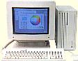

IICiのWombat改造について

II2Ciは1989年発売の、最高級マッキントッシュだったのですが、68030の２５MHｚでは、何に使うにしてもつらいし、いじっているうちに起動しなくなってしまったので、マザーボードをCentris650のものに取り替え、68040の４０MHｚマシンとしてよみがえらせました。Centris650のマザーボードは、サイズや電源コネクタ、HD、FDのコネクタなどがII2Ciと同じなので、II2Ciのケース内部の邪魔になる突起や、バックパネルなどを、削ればうまく収まるようになります。見かけはII2Ciで中身はCentris650というマシンができたわけです。このマシンを４０MHｚにクロックアップし、68040では最高峰のQuadra840AVをしのぐマシンにするためには、マシンのIDを変える改造（私はWombat改造と呼んでいる）が必要になります。
Wombatは、Centris650、Quadra650とQuadra800のマザーボードに付けられた名前です。ボードの裏面に付けられた、チップ抵抗の有無と、LED表示器の有無が、コンピュータのIDを変えます。これらの変更により、コンピュータのIDはC650、Q650、Q800とリリースされなかったいくつかのマシンになります。C650のまま、クロック周波数を上げると、２８MHｚ以上では、シリアルポートが、正常に動作しなくなります。そこで、チップ抵抗を移動させて、Q650のIDにしてやると、Q650のノーマルの３３MHｚやそれ以上の周波数で動作させることができ、私の場合は、２５MHｚの６８０４０で、４０MHｚにしてあります。もちろん、プリンタなどのシリアルポートはちゃんと動作します。
改造方法は、IOSBチップの下にある、Ｒ１５１抵抗を取り去り、Ｒ１５２の位置に１．２Ｋオームの抵抗を取り付けるだけです。マザーボードを傷つけないように、慎重にやるのですが、チップ抵抗を外すのがかなり難しく、私の場合は２本の半田鏝を使い、チップ抵抗の両端を同時に加熱し、右手の半田ごてで、ちょっと前に押してやったら、簡単に外れました。
注意事項として、この改造はCPUが68LC040の場合は、うまく行かないようで、FPUのついた68040が必要になります。もともとQuadraでは、68LC040は使えないのですが、Centrisでは使えます。つまりCentrisは68LC040が標準で、なぜか、日本で販売されたCentrisはFPUの付いた68040が実装されており、私の手に入れたものも、2台ともFPU付きでしたので、問題なく改造ができました。
これらの情報の大部分は、Clock Chipping のホームページから得ております。
68Kマッキントッシュのページに戻る